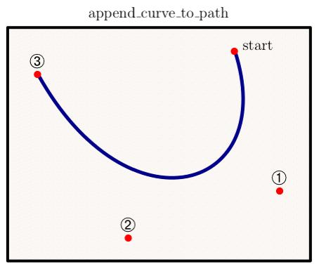

class Tioga::Creating_Paths
These are the general methods for creating paths for later use in PDF graphics operations. See also Tutorial::SimpleFigure.
Public Instance Methods
Append a cubic Bezier curve to the current path. The curve extends from the current path end to the point given by the figure coordinates (x3, y3), using (x1, y1) and (x2, y2) as the Bezier control points (also in figure coordinates). The new path end is (x3, y3). See also bezier_control_points.
The illustration shows in dark blue the curve that is added for the control points given in red.

# File lib/Tioga/Creating_Paths.rb, line 45 def append_curve_to_path(x1, y1, x2, y2, x3, y3) end
Append a straight line segment from the current path end to the point given by the figure coordinates (x, y). The new path end point is (x, y).
# File lib/Tioga/Creating_Paths.rb, line 23 def append_point_to_path(x, y) end
The arguments x_vec and y_vec should be Dvectors of equal lengths holding figure coordinates for points. If there is an open subpath already under construction, the first point is added with #append_point_to_path, but if the path is empty or has just been closed, then the first point is passed to #move_to_point instead. All subsequent points are used for calls to append_point_to_path.
# File lib/Tioga/Creating_Paths.rb, line 63 def append_points_to_path(x_vec, y_vec) end
Like #append_points_to_path,
but where there is a gap, it does #move_to_point
instead of append_point_to_path. If the flag close_subpaths is
true, then does #close_path before doing
the #move_to_point
for each gap. The array gaps holds integer indices in
x_vec and y_vec for locations that should be moved to.
This routine is useful with sources that provide paths that may consist of
many subpaths (such as make_contour).
# File lib/Tioga/Creating_Paths.rb, line 72 def append_points_with_gaps_to_path(x_vec, y_vec, gaps, close_subpaths) end
Computes bezier control points corresponding to a given cubic. The cubic, y(x), is defined from x0 to x0+delta_x. At location x = x0 + dx, with dx between 0 and delta_x, define y = a*dx^3 + b*dx^2 + c*dx + y0. This routine returns [x1, y1, x2, y2, x3, y3], the Bezier control points to match this cubic.
# File lib/Tioga/Creating_Paths.rb, line 32 def bezier_control_points(x0, y0, delta_x, a, b, c) end
Closing a path has the effect of adding a line from the end of the current subpath to the start of that subpath as determined by the previous move_to_point. Typically, the last action for a closed path should be a call to #close_path so that the line join will be done properly at the junction point; see stroke for details.
# File lib/Tioga/Creating_Paths.rb, line 55 def close_path end
If croak_on_nonok_numbers is set, the kernel will emit a warning when it encounters a weird point (such as with infinite or NaN coordinates) in a primitive path operation. In any case, the faulty element in the path will be discarded.
# File lib/Tioga/Creating_Paths.rb, line 95 def croak_on_nonok_numbers end
Sets the croak_on_nonok_numbers warning. On by default.
# File lib/Tioga/Creating_Paths.rb, line 99 def croak_on_nonok_numbers=(bool) end
Reset the path to empty. This is done automatically after each stroke, fill, or clip.
# File lib/Tioga/Creating_Paths.rb, line 79 def discard_path end
Begin a new subpath by moving to the point given by the figure coordinates (x, y), omitting any connecting line segment. If the previous path construction operator in the current path was also #move_to_point, the new #move_to_point overrides it; no vestige of the previous #move_to_point operation remains in the path.
Note that once you start a path, you must finish with it before going on to anything else. So you need to do a sequence of path producer operations followed by a single path consumer operation. After the path consumer operation finishes, the current path is reset to empty and you can then safely do other operations such as change the line width or the line type.
# File lib/Tioga/Creating_Paths.rb, line 18 def move_to_point(x, y) end
Adds the figure coordinates point (x, y) to the bounding box. Not usually needed, but can be helpful with text that is outside the box determined by the graphics since the tioga kernel does not have exact information about how large the text bbox will be once TeX has done the typesetting.
# File lib/Tioga/Creating_Paths.rb, line 87 def update_bbox(x, y) end